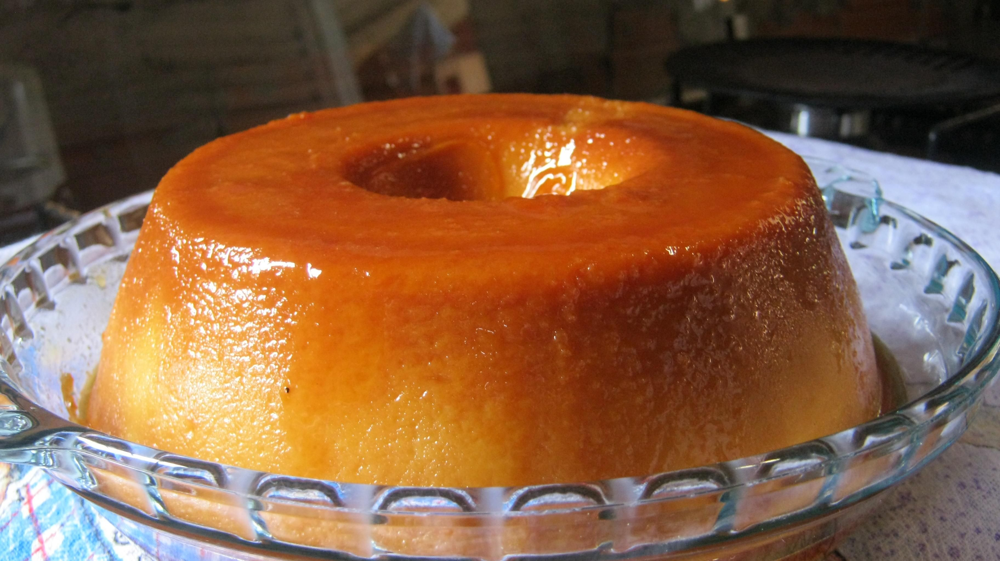

Pudim de pão

Ingredientes
- 1 xícara e meia de açúcar cristal
- 2 xícaras e meia de chá de leite
- 1 xícara de açúcar
- 2 pães franceses cortados em rodelas
- 1 colher de sopa de margarina
- 3 ovos
Modo de preparo
Calda
- Em uma frigideira, coloque o açúcar aos poucos e derreta em fogo baixo.
- Despeje o caramelo na forma de pudim.
Pudim
- No liquidificador, coloque 2 xícaras e meia de leite, 1 xícara de açúcar, 2 pães franceses cortados em rodelas, 1 colher de sopa de
margarina e 3 ovos. Bata até obter uma mistura homogênea.
- Coloque a mistura na forma já caramelizada.
- Asse em banho-maria em forno preaquecido a 180 graus Celsius por 50 minutos.
- Deixe esfriar completamente antes de desenformar.
- Para desenformar com facilidade, esquente a base da forma.
- Sirva em seguida.